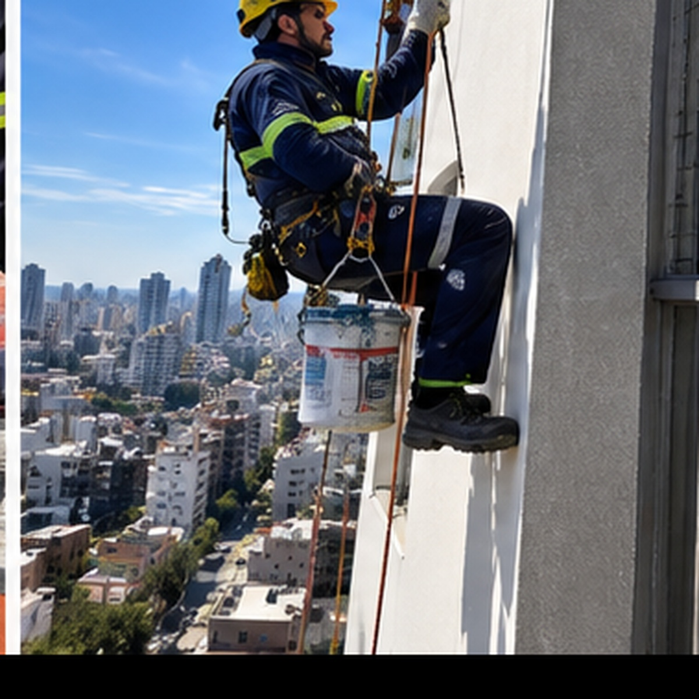
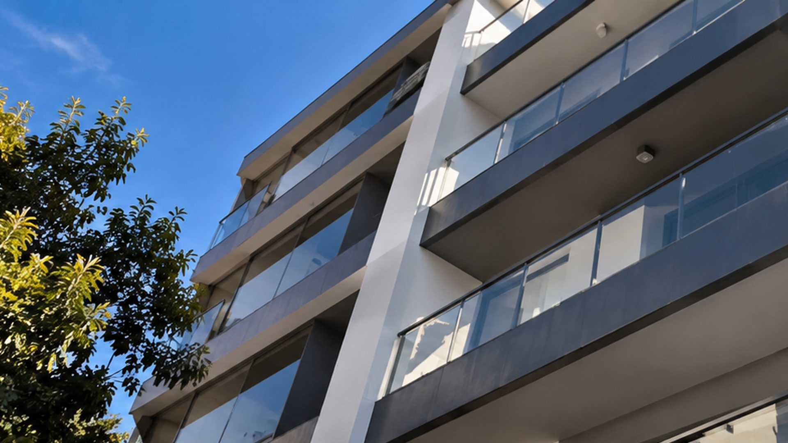
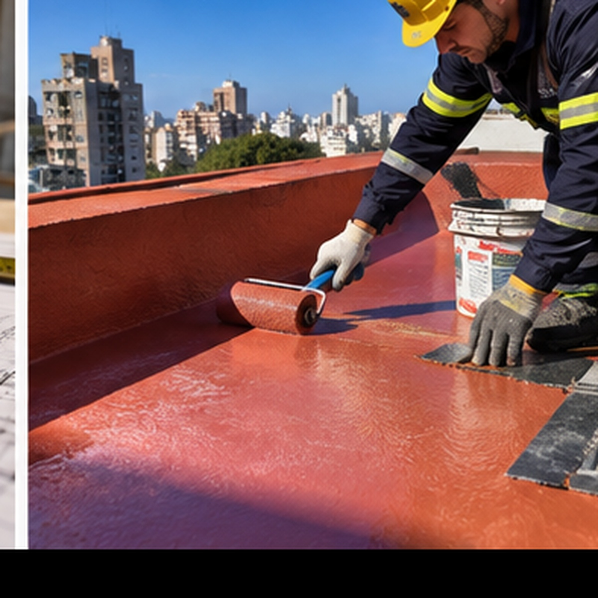
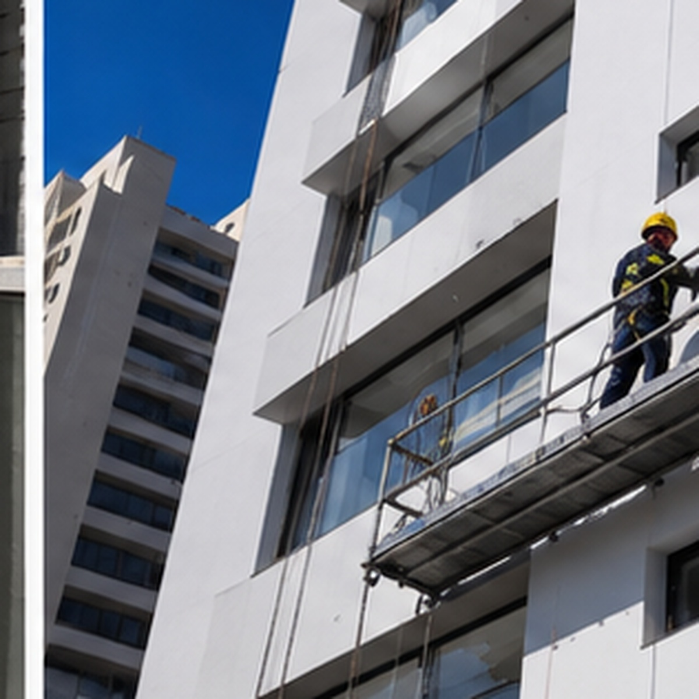

01 / ALTURA
Trabajos en altura
Intervenciones en sectores elevados y de difícil acceso.

PARDO CONSTRUCCIONES / BUENOS AIRES
Obras, trabajos en altura, impermeabilización y mantenimiento para cuidar cada espacio.
QUÉ HACEMOS
Del proyecto puntual al cuidado continuo de los edificios.

Intervenciones en sectores elevados y de difícil acceso.

Terrazas, medianeras y superficies expuestas a la intemperie.

Reparaciones y tareas para conservar el estado de los edificios.
Trabajos de obra y mejoras para adaptar cada espacio.
UNA CONSULTA CLARA DESDE EL INICIO
Cada obra empieza con una necesidad distinta. Compartinos el tipo de trabajo, la ubicación y, si tenés, fotos del lugar para orientar la consulta.
Una breve descripción nos ayuda a entender el alcance.
Vemos ubicación, acceso y detalles que hagan falta.
Te respondemos para avanzar con una propuesta.
EL OFICIO EN IMÁGENES
Imágenes ilustrativas para esta propuesta de diseño.
HABLEMOS DE TU PROYECTO
Consultanos por trabajos en altura, impermeabilización, mantenimiento u obras en Buenos Aires.
Escribir por WhatsApp ↗